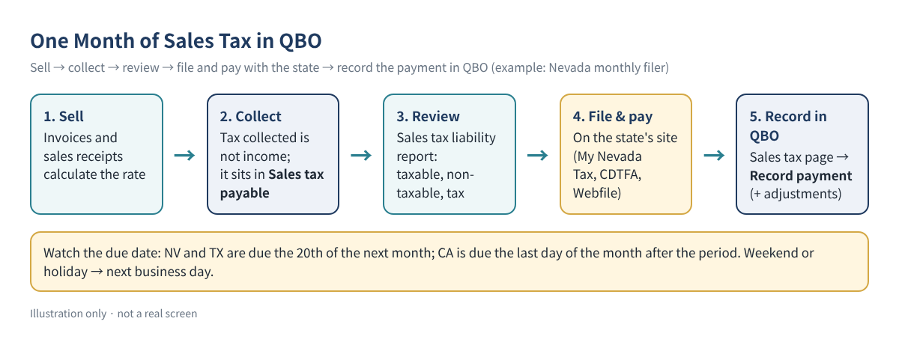
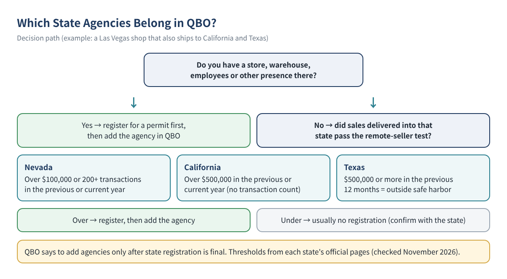
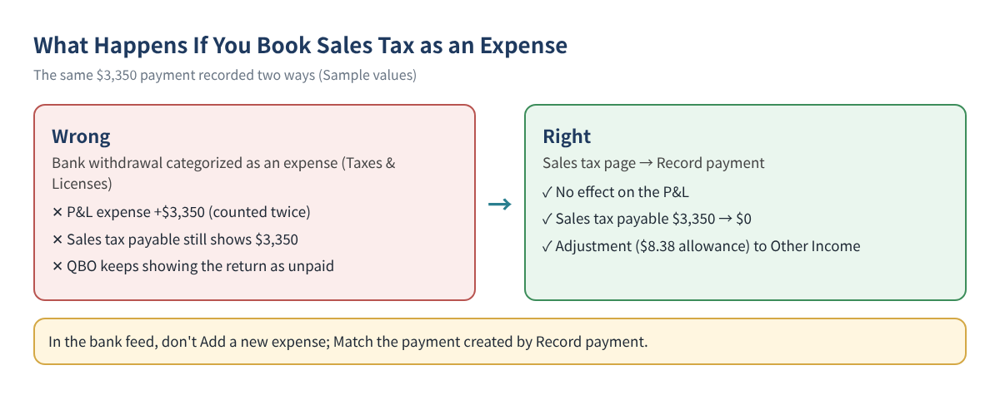
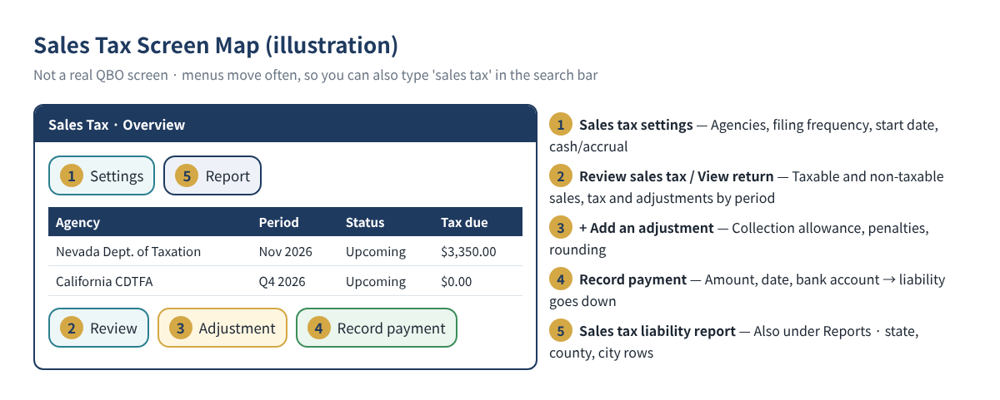

Is Sales Tax Showing Up as Income in Your Books? QuickBooks Online Sales Tax Setup and Filing Prep for Nevada, California and Texas
Sales tax you collect from customers is not your money. You hold it for the state and hand it over by a set date. When sales tax isn't set up properly in QuickBooks Online (QBO), the tax ends up mixed into income, the payment to the state gets booked as an expense on top of everything else, or the numbers on the state return never match the books.
This guide walks through setting up QBO's sales tax feature from the start, checking the numbers before each monthly or quarterly return, and recording what you filed and paid on the state's website. It also compares rates, filing frequencies, due dates and discounts for Nevada, California and Texas side by side, based on each state's official pages. It expands on a topic introduced briefly in the first post of this series, QuickBooks Online Basics for Beginners.
This article is general educational information, not tax, legal or financial advice.
Who this is for ☐ You charge tax on invoices but aren't sure where it goes in QBO ☐ You've been categorizing state sales tax payments as a "Taxes" expense in the bank feed ☐ Taxable sales on your return don't match QBO ☐ Your Nevada store has started shipping to customers in California or Texas ☐ You heard Nevada changed its due date and want the details
1. The Principle: Sales Tax Is a Liability, Not Income
If you sell a $100 item and collect $8.38 in tax, your sale is $100 and the $8.38 is a debt to the state. With sales tax turned on, QBO keeps the tax in a Sales tax payable liability and posts only the pre-tax amount to income. When you pay the state, the liability goes down. An expense never appears anywhere in this flow.

Intuit's help describes sales tax in this order: understand how tax is calculated, tell QBO where you collect tax (agencies), assign sales tax categories to products and services, check customer details (including exemptions), track tax on sales, check what you owe, and file. The steps below follow the same order.
2. Before Setup: Which States Do You Register In?
QBO says to add an agency only after your state registration is final. In other words, the seller's permit comes before the QBO setting. A state where you have a store, warehouse or employees is clearly in scope. A state where you have no presence can still require registration once the sales you deliver there pass its remote-seller threshold.

| Item | Nevada | California | Texas |
|---|---|---|---|
| Agency | Nevada Department of Taxation | CDTFA (California Department of Tax and Fee Administration) | Texas Comptroller of Public Accounts |
| Remote-seller threshold | More than $100,000 in retail sales into Nevada, or 200 or more transactions, in the previous or current calendar year | More than $500,000 of tangible personal property delivered into California in the previous or current calendar year (no transaction count) | Under $500,000 in Texas revenue in the previous 12 calendar months = safe harbor (no permit needed) |
| Permit notes | $15 per location (Department's taxpayer information packet) | Online registration offered | Filing frequency assigned by letter after the permit is approved |
Tip Remote-seller tests count sales delivered into that state. Walk-in sales at your Nevada counter are generally Nevada sales. If shipments to other states are growing, keep a monthly tally of sales and transaction counts by ship-to state so you can see when you approach a threshold. Confirm the exact test with each state.
3. Three States Side by Side: Rates, Frequency, Due Dates, Discounts
The table below reflects each state's official pages as opened in November 2026. Anything we could not confirm is marked "check with the state" rather than guessed. Rates and dates change, so recheck before you file.
| Item | Nevada (NV) | California (CA) | Texas (TX) |
|---|---|---|---|
| Base rate | 6.85% minimum statewide rate | 7.25% statewide base rate | 6.25% state rate |
| Local rates | Added by county, e.g., Clark 8.375%, Washoe 8.265% | District taxes of 0.10% to 2.00% added in some areas (rate table effective October 1, 2026 posted) | Local tax up to 2%; combined maximum 8.25% |
| Filing frequency | Monthly if taxable sales exceed $10,000 a month; quarterly if under; annual if under $1,500 in the prior year | Assigned by CDTFA: quarterly, quarterly prepay, monthly, fiscal yearly, yearly | Assigned by the Comptroller: monthly, quarterly, yearly |
| Due date | 20th of the month after the period (changed per a January 2026 notice; previously the last day for many filers) | Last day of the month after the period (quarterly: 4/30, 7/31, 10/31, 1/31) | 20th of the following month (quarterly: 4/20, 7/20, 10/20, 1/20; yearly: 1/20) |
| Weekend/holiday | Next business day | Next business day | Next business day |
| On-time benefit | 0.25% collection allowance on sales tax | No discount mentioned on the CDTFA pages we checked (check with the state) | 0.5% timely filing discount; extra 1.25% for prepaying |
| No sales in a period | A return is required each period even with no taxable sales | A return is required by the due date even with no sales (no $0 payment needed) | Not stated on the pages we checked (check with the state) |
| Late | Graduated penalty of 2% to 10%; interest 0.75% per month | Check with the state | $50 per late report; 5% if 1–30 days late, 10% after 30 days; interest starts 61 days after the due date |
| Resale certificate | Check the Department's forms | CDTFA-230 (General Resale Certificate) | Form 01-339 |
| Online filing | My Nevada Tax | CDTFA online services | Webfile (free electronic filing) |
Nevada sellers, take note In a January 23, 2026 release, the Nevada Department of Taxation announced that sales and use tax returns are now due on the 20th of the month after the period instead of the last day (AB 594). Filing at month-end out of habit now means filing late. The Department's home page also says electronic submission of tax documents and payments will be required starting December 7, 2026, so if you have been filing on paper, set up your My Nevada Tax account now.
Texas generally bases local tax on the seller's place of business for in-state sellers, with exceptions. In California, a retailer engaged in business in a district generally charges that district's rate on taxable sales delivered there. In Nevada, use the county rate schedule. QBO's automated sales tax calculates rates from the location of sale and the ship-to address, so the address entries in step 5 below need to be accurate.
4. Setting Up Sales Tax in QBO, Step by Step
In current QBO screens, Overview and Sales tax settings sit under All apps → Sales Tax in the left menu. Menus move often, so if you can't find them, type "sales tax" in the search bar. Intuit lists sales tax for most plans, including Simple Start, Essentials, Plus and Advanced, and notes that the manual sales tax feature is limited on the Free and Lite plans.
Step 1. Start automated sales tax and confirm your address
- Go to All apps → Sales Tax → Overview. The first time, choose Use automatic sales tax.
- Confirm your business name and address, then select Next. This address becomes the default location of sale on invoices and sales receipts, so it must be your actual store address.
- Answer whether you collect tax outside your home state. If you're registered elsewhere, choose Yes and pick that agency.
Step 2. Set filing frequency, start date and method for each agency
- For each agency, choose the filing frequency the state assigned (monthly, quarterly or yearly). Match it to your permit paperwork or state notice.
- To add an agency later, go to Sales tax settings → Add agency, then enter the agency, filing frequency, start date and reporting method (cash or accrual), and save.
- Use your permit's effective date as the start date. A wrong start date can pull earlier sales into a return or leave sales out.
| Setting | Sample values | Document to check |
|---|---|---|
| Agency | Nevada Department of Taxation | Permit registration confirmation |
| Filing frequency | Monthly (assuming taxable sales over $10,000 a month) | Department notice / My Nevada Tax account |
| Start date | 2026-01-01 | Permit effective date |
| Reporting method | Accrual | State reporting basis and your accountant's guidance |
| Additional agency | California CDTFA (quarterly), assuming the remote-seller threshold was passed | CDTFA registration confirmation |
Step 3. Assign sales tax categories to products and services
Automated sales tax looks at the customer's exempt status, where you sell or ship, and each product's sales tax category. Open each item in Products and services and assign a category. Taxability of services in particular varies by state, so check state guidance for anything unclear. If your item list lives in a spreadsheet, see importing customers, vendors and products.
Step 4. Mark tax-exempt customers
Wholesale customers buying for resale and exempt organizations should be marked exempt on the customer record. In the manual sales tax screens, that's the This customer is tax exempt checkbox under Edit → Additional info; labels can differ by plan and screen version. The QBO checkbox is not the exemption itself: collect and keep a resale certificate such as California's CDTFA-230 or Texas Form 01-339. Exempt sales without a certificate can become a problem in an audit.
Step 5. Check tax on each sale
- On an invoice or sales receipt, confirm the Location of sale.
- For shipped orders, enter the Shipping to address so QBO can apply the destination rate.
- Confirm the Tax column on taxable lines, then select the tax total or See the math to view the state, county and city breakdown.
For invoicing in general, see invoices, payments, refunds and credits.
5. Before You File: Reading the Sales Tax Liability Report
Search Reports for "Sales Tax Liability," or open it from Related tasks on the Sales Tax Overview. Pick the period and agency and run it. You'll see these columns:
- Gross total: all sales before tax, taxable and non-taxable. Credit memos and refund receipts reduce it.
- Non-taxable amount: sales with no tax because of an exempt customer, tax not selected, or a non-taxable item or category.
- Taxable amount: sales that were taxed.
- Tax amount: the tax actually charged.
Two cautions. First, the report does not include bank deposits or journal entries, so sales recorded straight on a deposit will be missing. Second, sales figures on the state, county and city rows can't be added together (the same sale appears at each level); only the tax amounts add up. If something looks off, select a Tax amount to drill into the transactions.
6. Worked Example: A Las Vegas Shop's November Return
Suppose a fictional shop, "Sandhill Gifts (sample)," has one store in Clark County and files monthly in Nevada. Its November 2026 report looks like this:
| Line (Sample values) | Amount | Note |
|---|---|---|
| Gross total (pre-tax sales) | $45,000.00 | Invoices and sales receipts |
| Non-taxable amount | $5,000.00 | Wholesale sales with resale certificates |
| Taxable amount | $40,000.00 | $45,000 − $5,000 |
| Tax amount (Clark County 8.375%) | $3,350.00 | $40,000 × 8.375% |
| Collection allowance (0.25%, if timely) | −$8.38 | $3,350 × 0.25% = $8.375; follow the return's line instructions |
| Amount paid | $3,341.62 | Paid in My Nevada Tax |
Due date: November is due the 20th of the next month. December 20, 2026 is a Sunday, so the deadline moves to Monday, December 21. Filing a few days early is a good habit.
Recording it in QBO
- On the Sales Tax Overview, open Review sales tax (or View return) for November.
- Use + Add an adjustment to enter −$8.38 to an Other Income account you created in advance, such as "Sales Tax Discount." Don't choose the sales tax liability account itself.
- File and pay in My Nevada Tax. Intuit offers a separate e-file service only in some states; most businesses file on the state's site.
- Back in QBO, select Record payment, enter $3,341.62, the payment date and the bank account, and save.
- When the withdrawal shows up in the bank feed, don't Add it as new. Match it to the payment you just recorded. See bank feeds: Match, Add and Rules for details.


7. Common Mistakes
- Booking the payment as an expense: adding the state withdrawal as "Taxes & Licenses" inflates expenses and leaves the liability open, so QBO keeps showing the return as unpaid. Use Record payment and Match. To fix past entries, see fixing mistakes with Void, Delete and Undo and bulk reclassifying transactions.
- Recording sales only as bank deposits: they never reach the sales tax report, so your return comes out low. For POS sales, consider a daily sales receipt.
- Entering tax-included totals as income: income is overstated and the liability is missing.
- Exempt sales without certificates: the QBO checkbox alone doesn't support the exemption.
- Frequency or start date that doesn't match the state: period totals won't line up with what you file.
- Still using Nevada's old month-end deadline: since 2026 it's the 20th.
- Journal entries to the sales tax liability account: they change the balance on the sales tax page in ways that are hard to explain. Intuit suggests checking those entries first when the balance due looks wrong.
8. FAQ
Does QBO file my sales tax return automatically?
Generally no. QBO organizes the numbers; you file on the state's website or by mail. Intuit says a separate e-file service is available in some states, so check whether your screens offer it.
How do I correct a period I already filed?
Intuit says QBO doesn't support amended returns. Ask the state how to correct the filing. Deleting an adjustment from a filed period can put QBO out of step with the state's records, so consider carrying the correction into the next return. The Texas Comptroller describes writing "Amended Return" at the top of a paper return.
How do I record Texas's 0.5% discount or Nevada's 0.25% allowance?
Enter a negative adjustment on the return review screen and point it to an Other Income account. Penalties and interest go to an expense account. Create these accounts in your chart of accounts first (see opening balances and chart of accounts setup).
Do I file if I had no sales?
Nevada and California state in their official guidance that a return is required even with no sales. The Texas pages we checked don't say, so confirm with the Comptroller.
If I ship to another state, must I collect its tax?
Without a physical presence there, it usually comes down to the remote-seller threshold (NV $100,000 or 200 transactions; CA $500,000; TX $500,000). Once you pass it, register with that state and then add the agency in QBO. Measurement periods differ, so confirm with each state.
9. Checklist
- ☐ The agencies in QBO match the states where you hold a permit
- ☐ Each agency's frequency, start date and cash/accrual method match the state's notice
- ☐ Every product and service has a sales tax category
- ☐ You keep a resale certificate for every exempt customer (CA: CDTFA-230; TX: 01-339)
- ☐ Sales are recorded as invoices or sales receipts, not only as bank deposits
- ☐ You reviewed taxable and non-taxable sales on the liability report before filing
- ☐ Discounts and penalties were adjusted to Other Income or expense accounts
- ☐ Payments were recorded with Record payment and matched in the bank feed
- ☐ Deadlines are on your calendar: NV the 20th, TX the 20th, CA the last day of the following month
10. Related Posts
- QuickBooks Online Basics for Beginners: 10 Things to Know
- Getting Started: Opening Balances and Chart of Accounts Setup
- Import Customers, Vendors and Products from a Spreadsheet
- Bank Feeds Explained: Match, Add and Rules
- Invoices to Payments: Partial Payments, Discounts, Refunds and Credits
- Fixing Mistakes: Void, Delete, Undo and the Audit Log
- Clean Up Undeposited Funds
- Bulk Reclassify Transactions with a Journal Entry
This article is general educational information, not tax, legal or financial advice. Whether a sale is taxable, whether you must register, and how often you file depend on your business and how you sell, so consult a qualified professional or the state tax agency about your situation. QuickBooks Online screens, menu names, plan features and prices, as well as state rates and due dates, change often; check current screens and official guidance from Intuit and each state before you act. All businesses and amounts in the examples are fictional.
QuickBooks is a registered trademark of Intuit Inc.; not affiliated with or endorsed by Intuit.
Sources
- Intuit QuickBooks Help: Set up and use automated sales tax in QuickBooks Online
- Intuit QuickBooks Help: Set up where you collect sales tax
- Intuit QuickBooks Help: Set up your sales tax in QuickBooks Online
- Intuit QuickBooks Help: Use automated sales tax on an invoice or sales receipt
- Intuit QuickBooks Help: File your sales tax return and record sales tax payments
- Intuit QuickBooks Help: Create or delete a sales tax adjustment
- Intuit QuickBooks Help: Understand the sales tax liability report
- Intuit QuickBooks Help: Check how much sales tax you owe
- Intuit QuickBooks Help: Manage sales tax payments
- Intuit QuickBooks Help: Default customer sales tax rate
- Nevada Department of Taxation: Sales Tax & Use Tax
- Nevada Department of Taxation: Nevada Revises Sales and Use Tax Deadlines Under AB 594 (Jan. 23, 2026)
- Nevada Department of Taxation: Components of Sales and Use Tax Rates
- Nevada Department of Taxation: Remote Sellers
- Nevada Department of Taxation: Taxpayer Information Packet
- Nevada Department of Taxation home page (electronic submission notice)
- CDTFA: California City & County Sales & Use Tax Rates
- CDTFA: Publication 51, Tax and Fee Rates and Filing Frequencies
- CDTFA: Managing Your Sales (New Permit and License Holders)
- CDTFA: Use Tax Collection Requirements (Wayfair) – General Information
- CDTFA: Know Your Sales and Use Tax Rate
- CDTFA: Local and District Tax Guide for Retailers
- CDTFA: Filing Dates for Sales and Use Tax Returns
- CDTFA-367-SUT: Quarterly Prepayment Due Dates
- Texas Comptroller: Sales and Use Tax
- Texas Comptroller: Sales Tax FAQ – Reporting and Paying
- Texas Comptroller: Due Dates for Taxes, Fees and Information Reports
- Texas Comptroller: Local Sales and Use Tax Collection (94-105)
- Texas Comptroller: Remote Sellers and Marketplace FAQ
- Texas Comptroller: Local Sales and Use Tax FAQ